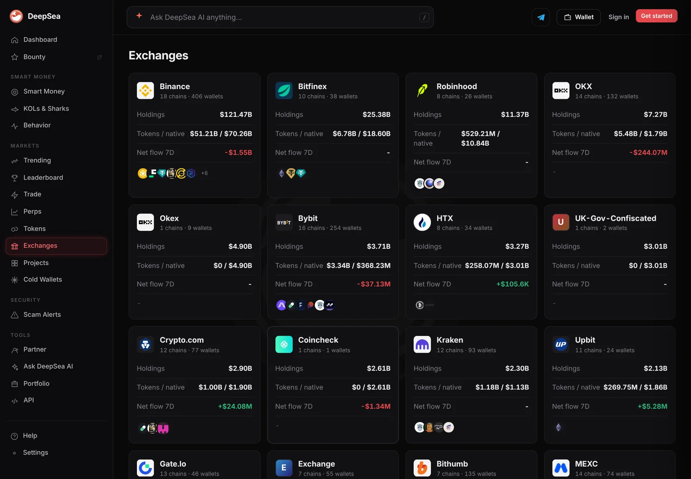

Binance's wallets hold 680,028 bitcoin, 1.7 times OKX, Bitfinex, Bybit and Bitget combined
CoinMarketCap's reserve tracker counts $124.65 billion in Binance's listed wallets, including $30.2 billion in USDT and USDC. DeepSea's flow data show $1.55 billion more left Binance than arrived over seven days.
Key points
- CoinMarketCap's reserve data, read at 6:42 a.m. ET Friday, count 680,028 bitcoin worth $41.98 billion in Binance's listed wallets, out of $124.65 billion in all.
- OKX, Bitfinex, Bybit and Bitget together hold 389,818 bitcoin in the same tracker, so Binance holds about 1.74 times as much.
- DeepSea's exchange page shows a net outflow of $1.55 billion from Binance over seven days, and $244 million from OKX.
 What DeepSea's data shows
What DeepSea's data shows
DeepSea's exchange page tracks its own set of exchange wallets and their flows. At 6:36 a.m. ET it put Binance's holdings at $121.47 billion across 406 wallets on 18 chains, with a seven-day net flow of minus $1.55 billion, meaning more left than arrived.
- OKX: $7.27 billion held, net minus $244.07 million in seven days
- Bybit: $3.71 billion, net minus $37.13 million
- Bitget: $402.67 million, net minus $22.10 million
- MEXC: $711.14 million, net plus $107.56 million
- Crypto.com: $2.90 billion, net plus $24.08 million
DeepSea's OKX total is lower than CoinMarketCap's, and it lists a separate "Okex" entry with $4.90 billion, because the two count different wallet lists.

Data: DeepSea (desea.io), checked November 20, 2026, 6:36 a.m. ET.
What the reserve tracker shows
Exchanges publish lists of their wallet addresses so outsiders can check what they hold, often called proof of reserves. CoinMarketCap adds up the balances on those addresses.
CoinMarketCap's Binance reserve data, read at 6:42 a.m. ET on Friday, November 20, count $124.65 billion across 432 assets. The largest lines are 680,028 bitcoin worth $41.98 billion, $24.52 billion in USDT, $5.68 billion in USDC and 3.18 million ether worth $5.56 billion.
How the rivals compare
In the same tracker, Bitfinex holds 160,343 bitcoin, OKX 126,646, Bybit 70,596 and Bitget 32,233. Together that is 389,818, so Binance holds about 1.74 times as much as all four.
Dollar coins show a similar gap. Binance's wallets hold $30.2 billion in USDT and USDC. OKX holds $5.77 billion in USDT and Bybit $2.55 billion in USDT plus $489 million in USDC. CoinMarketCap shows no Coinbase or Kraken wallets, so those two are not in the comparison.

LC Insight analysis
This section is our reading of the facts above, not a statement of fact.
- We think the $1.55 billion weekly outflow is small next to Binance's $124 billion in tracked wallets, about 1.2%, so its lead in reserves is not shrinking in any meaningful way.
- Reserve trackers show assets, not what an exchange owes customers, so these figures show size, not solvency.
- DeepSea and CoinMarketCap count different wallet lists, so OKX looks bigger or smaller depending on the tracker. Comparisons hold best inside one source.
What's next
- Binance's bitcoin balance against 680,028.
- DeepSea's seven-day net flow for Binance.
- Whether Coinbase or Kraken wallets appear in CoinMarketCap's tracker.
Disclaimer. This article is based on public information and the sources listed below as of the update time shown. It is for information only and is not investment, legal or tax advice. Figures may change as companies and authorities publish new data.
Sources
- CoinMarketCap, Binance exchange reserve data (read November 20, 2026, 6:42 a.m. ET)
- CoinMarketCap, OKX exchange reserve data (read November 20, 2026, 6:42 a.m. ET)
- CoinMarketCap, Bitfinex exchange reserve data (read November 20, 2026, 6:42 a.m. ET)
- CoinMarketCap, Bybit exchange reserve data (read November 20, 2026, 6:42 a.m. ET)
- CoinMarketCap, Bitget exchange reserve data (read November 20, 2026, 6:42 a.m. ET)
- DeepSea, Exchanges (read November 20, 2026, 6:36 a.m. ET)